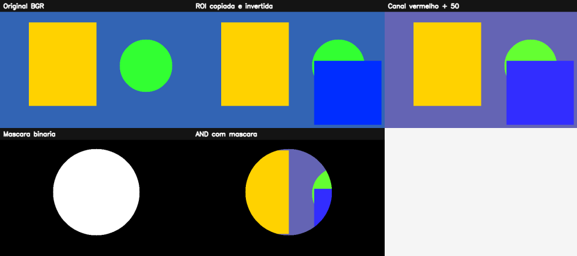

1. Imagem digital e OpenCV: fundamentos para começar a enxergar imagens como dados¶
O que você aprenderá¶
Antes de tentar detectar rostos, reconhecer objetos, segmentar uma cena ou usar redes neurais, é necessário dominar uma ideia central: para o computador, uma imagem é um conjunto organizado de números.
Ao final deste capítulo, você deverá ser capaz de:
- explicar o que é uma imagem digital e por que ela pode ser representada por uma matriz;
- diferenciar pixel, resolução, amostragem, quantização e profundidade de cor;
- compreender o sistema de coordenadas usado pelo OpenCV;
- explicar por que
imagem[y, x]usa primeiro a linha e depois a coluna; - identificar a diferença entre imagens em tons de cinza e imagens coloridas;
- compreender por que o OpenCV utiliza, por padrão, a ordem de canais BGR;
- carregar, verificar, exibir e salvar imagens com segurança;
- consultar
shape,dtype,sizee outras propriedades importantes; - acessar e modificar pixels sem cair em erros comuns;
- entender a diferença entre operações pixel a pixel e operações vetorizadas;
- extrair e manipular uma ROI (Region of Interest);
- compreender a diferença entre uma view e uma cópia independente no NumPy;
- separar, modificar e recombinar canais de cor;
- criar máscaras binárias;
- aplicar operações
AND,OR,NOTeXOR; - compreender o problema de overflow em
uint8; - construir um pequeno pipeline de processamento de imagens;
- resolver exercícios conceituais e práticos usando Python, NumPy e OpenCV.
1.1 Antes de tudo: o computador não “vê” como nós¶
Quando uma pessoa observa uma fotografia de uma estrada, pode dizer quase imediatamente:
“Há uma pista, duas árvores, um carro e uma placa.”
O computador não recebe essas ideias prontas. Ele recebe valores numéricos.
Essa diferença é fundamental.
Analogia: o mosaico¶
Imagine um grande mosaico feito com milhares de pequenos azulejos coloridos.
De longe, você enxerga a figura completa. De perto, percebe que ela é formada por pequenas peças individuais.
Em uma imagem digital:
- o mosaico inteiro corresponde à imagem;
- cada azulejo corresponde a um pixel;
- a posição do azulejo corresponde às coordenadas;
- a cor do azulejo corresponde a um ou mais valores numéricos.
Gonzalez e Woods (2010) apresentam a imagem digital como uma função bidimensional cujas coordenadas espaciais e amplitudes são discretizadas. Em uma formulação simplificada, podemos representar uma imagem em tons de cinza por:
em que:
yrepresenta a linha;xrepresenta a coluna;I(y,x)representa a intensidade armazenada naquela posição.
Em uma imagem típica de 8 bits em tons de cinza:
Assim:
0representa preto;255representa branco;- valores intermediários representam diferentes níveis de cinza.
Essa representação discreta é a base do processamento digital de imagens (GONZALEZ; WOODS, 2010).
1.2 O que é um pixel?¶
Pixel vem de picture element, isto é, “elemento de imagem”.
Um pixel é a menor posição individual que tratamos diretamente em uma imagem matricial.
É importante não confundir duas ideias:
- posição do pixel: onde ele está;
- valor do pixel: qual intensidade ou cor está armazenada naquela posição.
Exemplo mental¶
Considere esta pequena matriz:
Ela pode representar uma imagem em tons de cinza de apenas 3 × 3 pixels.
O valor 0 seria visualizado como preto.
O valor 255 seria branco.
O valor 100 seria um cinza relativamente escuro.
Exemplo 1 — criando uma pequena imagem manualmente¶
import numpy as np
imagem_cinza = np.array([
[0, 50, 100],
[150, 200, 255],
[30, 80, 120]
], dtype=np.uint8)
print(imagem_cinza)
print("Formato:", imagem_cinza.shape)
Saída esperada:
Nesse exemplo, não existe ainda nenhuma “fotografia”. Temos apenas uma matriz de números. Entretanto, esses números podem ser interpretados como intensidades luminosas e exibidos como imagem.
1.3 Imagem digital é matriz¶
No OpenCV para Python, uma imagem carregada normalmente é representada por um objeto numpy.ndarray.
Isso significa que muitas operações de processamento de imagens são, na prática, operações sobre matrizes NumPy.
Analogia: planilha¶
Uma imagem em tons de cinza pode ser comparada a uma planilha:
- cada linha da planilha é uma linha da imagem;
- cada coluna da planilha é uma coluna da imagem;
- cada célula contém a intensidade de um pixel.
Uma imagem colorida acrescenta uma “profundidade”: em vez de cada célula conter apenas um número, ela contém três valores de intensidade.
Imagem em tons de cinza¶
Formato típico:
Exemplo:
Significa:
- 480 linhas;
- 640 colunas;
- 480 × 640 = 307.200 pixels.
Imagem colorida¶
Formato típico:
Exemplo:
Significa:
- 480 linhas;
- 640 colunas;
- 3 valores por posição espacial.
Em uma imagem colorida de 8 bits e três canais, cada pixel espacial possui três números.
1.4 Resolução: quantos “azulejos” formam a imagem?¶
A resolução espacial informa quantas posições de amostragem existem na imagem.
Uma imagem com:
possui:
pixels espaciais.
Atenção à ordem¶
Quando falamos de resolução no cotidiano, normalmente dizemos:
Por exemplo:
Entretanto, o atributo shape do NumPy normalmente aparece como:
Logo, uma imagem Full HD colorida normalmente apresentaria:
Um dos erros mais comuns de quem começa
shape usa a lógica de matrizes: primeiro linhas, depois colunas.
Por isso, (1080, 1920, 3) significa 1080 pixels de altura e 1920 pixels de largura.
1.5 Amostragem e quantização¶
A formação de uma imagem digital envolve duas discretizações importantes (GONZALEZ; WOODS, 2010).
Amostragem¶
A amostragem determina quantas posições espaciais serão representadas.
Uma analogia útil é imaginar que você coloca uma grade sobre uma cena.
- grade muito grossa → poucos pontos → menos detalhes espaciais;
- grade mais fina → mais pontos → mais detalhes.
A amostragem está diretamente relacionada à resolução espacial.
Quantização¶
A quantização determina quantos valores diferentes cada posição pode assumir.
Em uma imagem de 8 bits:
níveis são possíveis.
Portanto, em um canal uint8, os valores vão de:
Analogia: régua¶
Imagine duas réguas.
A primeira tem apenas marcações de centímetro.
A segunda tem marcações de milímetro.
As duas medem a mesma dimensão, mas a segunda oferece mais níveis possíveis de representação.
De maneira semelhante:
- amostragem decide quantas posições espaciais temos;
- quantização decide quantos níveis de intensidade podemos representar em cada posição.
1.6 O tipo uint8¶
O tipo mais comum em imagens convencionais é:
O nome significa:
u: unsigned — sem sinal;int: inteiro;8: oito bits.
Com oito bits, temos 256 combinações possíveis:
Exemplo 2 — verificando o tipo¶
Saída:
Por que o tipo de dado importa?¶
Porque operações matemáticas precisam respeitar o intervalo do tipo.
Veja:
Dependendo da operação NumPy usada, o valor pode retornar modularmente no intervalo de 8 bits, em vez de simplesmente permanecer em 255.
É como um hodômetro antigo:
Para processamento de imagens, muitas vezes queremos saturação, não retorno modular.
Exemplo 3 — adição com saturação no OpenCV¶
import cv2
import numpy as np
valor = np.array([[250]], dtype=np.uint8)
resultado = cv2.add(valor, 20)
print(resultado)
Resultado:
O OpenCV limita o valor ao máximo representável. Esse comportamento é chamado de saturação.
1.7 Coordenadas: por que imagem[y, x]?¶
Este é um dos pontos mais importantes do capítulo.
Na geometria cartesiana, aprendemos a escrever um ponto como:
Entretanto, uma matriz é acessada como:
Como:
- linha corresponde à direção vertical →
y; - coluna corresponde à direção horizontal →
x;
temos:
Analogia: prédio¶
Imagine um prédio:
yindica o andar;xindica a porta daquele andar.
Para localizar um apartamento, você primeiro escolhe o andar e depois a posição horizontal.
Uma matriz funciona de maneira semelhante:
Sistema de coordenadas de imagens¶
A origem normalmente está no canto superior esquerdo:
O eixo x cresce para a direita.
O eixo y cresce para baixo.
Isso é diferente do plano cartesiano tradicional, no qual normalmente desenhamos y crescendo para cima.
Bradski e Kaehler (2008) destacam a importância de compreender a representação matricial e a convenção de coordenadas usada nas operações do OpenCV.
Duas convenções convivem no mesmo programa
Para acessar a matriz usamos imagem[y, x].
Para várias funções geométricas do OpenCV, como cv2.circle, o ponto é fornecido como (x, y).
Exemplo 4 — acessando um pixel¶
import numpy as np
imagem = np.zeros((100, 200, 3), dtype=np.uint8)
x = 50
y = 20
pixel = imagem[y, x]
print(pixel)
1.8 BGR: a ordem de canais do OpenCV¶
Em muitas bibliotecas e contextos gráficos, usamos a ordem:
isto é:
- Red;
- Green;
- Blue.
O OpenCV historicamente utiliza, por padrão, a ordem:
isto é:
- Blue;
- Green;
- Red.
(BRADSKI; KAEHLER, 2008).
Analogia: três torneiras¶
Imagine três torneiras que misturam luz:
- torneira azul;
- torneira verde;
- torneira vermelha.
No OpenCV, escrevemos a intensidade nessa ordem:
Exemplo 5 — cores puras em BGR¶
azul = [255, 0, 0]
verde = [0, 255, 0]
vermelho = [0, 0, 255]
branco = [255, 255, 255]
preto = [0, 0, 0]
Portanto:
faz o pixel ficar vermelho, não azul.
1.9 Criando uma imagem sintética¶
Antes de depender de arquivos externos, é útil aprender a criar imagens diretamente na memória.
Exemplo 6 — fundo preto¶
Interpretação:
Todos os valores começam em zero, portanto a imagem é preta.
Exemplo 7 — fundo colorido¶
O trecho:
significa:
selecione todas as linhas e todas as colunas.
Assim, todos os pixels recebem a mesma cor BGR.
Desenhando formas¶
import cv2
import numpy as np
imagem = np.zeros((400, 600, 3), dtype=np.uint8)
cv2.rectangle(
imagem,
(80, 60), # canto superior esquerdo: (x, y)
(280, 300), # canto inferior direito: (x, y)
(0, 200, 255), # cor BGR
-1 # preenchido
)
cv2.circle(
imagem,
(450, 200), # centro: (x, y)
80, # raio
(50, 255, 50), # cor BGR
-1
)
Observe novamente a diferença:
mas:
1.10 Carregando uma imagem do disco¶
A função básica para leitura é:
Exemplo 8 — leitura colorida¶
Flags comuns¶
| Flag | Resultado |
|---|---|
cv2.IMREAD_COLOR |
carrega imagem colorida em BGR |
cv2.IMREAD_GRAYSCALE |
carrega em um canal de tons de cinza |
cv2.IMREAD_UNCHANGED |
preserva canais existentes, inclusive alfa quando disponível |
Um erro clássico¶
Isto é perigoso:
Se o arquivo não for carregado, imread pode retornar None.
Então:
falhará.
Exemplo 9 — leitura segura¶
import cv2
caminho = "foto.jpg"
imagem = cv2.imread(caminho, cv2.IMREAD_COLOR)
if imagem is None:
raise FileNotFoundError(
f"Não foi possível abrir a imagem: {caminho}"
)
print("Imagem carregada com sucesso.")
print("Shape:", imagem.shape)
Analogia: encomenda¶
cv2.imread() é como pedir uma encomenda.
Você não deve começar a usar o conteúdo da caixa antes de verificar se a caixa realmente chegou.
O teste:
faz essa verificação.
1.11 Exibindo uma imagem¶
Em programas desktop, podemos usar:
O papel de cada função¶
solicita a criação da janela.
mantém o programa aguardando uma tecla.
fecha as janelas criadas pelo OpenCV.
Exemplo 10 — ciclo básico de exibição¶
import cv2
imagem = cv2.imread("foto.jpg")
if imagem is None:
raise FileNotFoundError("A imagem não foi encontrada.")
cv2.imshow("Minha imagem", imagem)
cv2.waitKey(0)
cv2.destroyAllWindows()
Ambientes sem interface gráfica
Em servidores, alguns ambientes de notebook e execuções automatizadas, cv2.imshow() pode não ser apropriado. Nesses casos, salvar a imagem com cv2.imwrite() ou usar a ferramenta de visualização do ambiente costuma ser mais adequado.
1.12 Salvando uma imagem¶
A função:
codifica a matriz no formato indicado pela extensão do arquivo.
Exemplo 11¶
import cv2
import numpy as np
imagem = np.zeros((200, 300, 3), dtype=np.uint8)
imagem[:] = [0, 0, 255]
sucesso = cv2.imwrite("imagem_vermelha.png", imagem)
print("Arquivo salvo?", sucesso)
Pipeline básico¶
Um grande número de programas de Visão Computacional segue esta lógica:
ou:
imagem = cv2.imread("entrada.jpg")
# processamento
resultado = ...
cv2.imwrite("saida.jpg", resultado)
1.13 Conhecendo a imagem com shape, dtype, size e ndim¶
Antes de processar uma imagem, devemos saber com que dados estamos trabalhando.
shape¶
Imagem colorida:
Imagem em cinza:
dtype¶
Exemplo:
size¶
Retorna o número total de elementos numéricos, não necessariamente o número de pixels espaciais.
Uma imagem:
tem:
mas:
ndim¶
- imagem cinza típica →
2; - imagem BGR típica →
3.
Exemplo 12 — relatório de metadados¶
import cv2
imagem = cv2.imread("foto.jpg")
if imagem is None:
raise FileNotFoundError("Arquivo não encontrado.")
print("shape:", imagem.shape)
print("dtype:", imagem.dtype)
print("size:", imagem.size)
print("ndim:", imagem.ndim)
if imagem.ndim == 3:
altura, largura, canais = imagem.shape
print("Altura:", altura)
print("Largura:", largura)
print("Canais:", canais)
else:
altura, largura = imagem.shape
print("Altura:", altura)
print("Largura:", largura)
print("Imagem de um canal")
1.14 Acesso direto a pixels¶
Imagem em tons de cinza¶
O retorno é um único valor.
Imagem BGR¶
O retorno contém três intensidades.
Exemplo:
Exemplo 13 — lendo o pixel central¶
altura, largura = imagem.shape[:2]
centro_x = largura // 2
centro_y = altura // 2
pixel = imagem[centro_y, centro_x]
print(
f"Pixel central em (x={centro_x}, y={centro_y}):",
pixel
)
1.15 Modificando pixels: faça primeiro para entender, depois faça melhor¶
Para aprender, é válido alterar um pixel individual.
Entretanto, processar uma imagem inteira com laços Python aninhados costuma ser muito menos eficiente do que utilizar operações vetorizadas do NumPy e rotinas otimizadas do OpenCV (MARQUES FILHO; VIEIRA NETO, 1999).
Forma didática, mas lenta¶
Forma vetorizada¶
As duas ideias podem produzir o mesmo resultado, mas a segunda delega a operação a mecanismos muito mais eficientes.
Analogia: pintar uma parede¶
Imagine pintar uma parede de duas maneiras.
Método 1: usar um cotonete e pintar um ponto por vez.
Método 2: usar um rolo e pintar uma área inteira.
Laços Python pixel a pixel se parecem com o cotonete.
Operações vetorizadas se parecem com o rolo.
1.16 Fatiamento (slicing)¶
O NumPy permite selecionar regiões inteiras de uma matriz.
Formato geral:
Isso significa:
- linhas de
y1atéy2 - 1; - colunas de
x1atéx2 - 1.
O limite final não é incluído.
Exemplo 14¶
Altura da região:
Largura:
Logo:
1.17 ROI — Região de Interesse¶
ROI significa Region of Interest, ou Região de Interesse.
Uma ROI é uma parte da imagem na qual queremos concentrar o processamento.
Exemplos¶
Em uma imagem de trânsito, podemos querer processar apenas:
- a região em que aparecem placas;
- a faixa da pista;
- a área do semáforo.
Em uma imagem médica, podemos querer trabalhar apenas:
- em uma lesão;
- em determinado órgão;
- em uma região previamente marcada.
Analogia: lupa¶
Imagine uma fotografia impressa. Você coloca uma lupa apenas sobre a placa de um carro porque é ali que está a informação importante.
A ROI é essa “área sob a lupa”.
Exemplo 15 — extraindo ROI¶
1.18 View versus cópia: uma diferença que surpreende iniciantes¶
No NumPy, um fatiamento frequentemente cria uma visualização (view) dos dados originais.
Considere:
Você pode imaginar que modificou apenas uma “nova imagem”.
Porém, a ROI pode compartilhar a memória com imagem.
Assim, a região correspondente da imagem original também muda.
Analogia: janela¶
Imagine que roi não seja uma nova fotografia, mas uma janela aberta sobre a fotografia original.
Se você desenha pela janela diretamente sobre a fotografia, está alterando o original.
Para criar uma cópia independente:
Agora existe um novo bloco de dados.
Exemplo 16 — observando o comportamento¶
import numpy as np
imagem = np.zeros((5, 5), dtype=np.uint8)
view = imagem[1:4, 1:4]
view[:] = 255
print(imagem)
Você verá que a matriz original mudou.
Agora compare:
imagem = np.zeros((5, 5), dtype=np.uint8)
copia = imagem[1:4, 1:4].copy()
copia[:] = 255
print(imagem)
A matriz original continuará zerada.
1.19 Separação dos canais B, G e R¶
Uma imagem BGR pode ser pensada como três “folhas” empilhadas:
Cada folha é uma matriz bidimensional.
Analogia: transparências¶
Imagine três transparências:
- uma registra quanto azul existe em cada posição;
- outra registra quanto verde;
- outra registra quanto vermelho.
Ao empilhá-las, reconstruímos a imagem colorida.
Exemplo 17 — cv2.split¶
Agora:
Alternativa com NumPy¶
Recombinação¶
1.20 Intensificando um canal com segurança¶
Suponha que desejemos aumentar a contribuição do vermelho.
Forma recomendada com saturação¶
b, g, r = cv2.split(imagem)
r_mais_forte = cv2.add(r, 50)
resultado = cv2.merge([b, g, r_mais_forte])
O valor máximo permanece em 255.
O que estamos fazendo conceitualmente?¶
Não estamos “pintando tudo de vermelho”.
Estamos aumentando o valor armazenado no canal vermelho de cada pixel, respeitando o limite do tipo de dado.
1.21 BGR versus RGB na visualização¶
Um problema frequente ocorre quando uma biblioteca espera RGB, mas recebe BGR.
Por exemplo, se outra biblioteca interpretar:
como:
azul e vermelho serão trocados.
Conversão¶
Conversão para cinza¶
Regra prática
Pergunte sempre: qual ordem de canais a biblioteca que recebe esta imagem espera?
1.22 Máscara binária: um molde que seleciona onde processar¶
Uma máscara binária é uma imagem de um canal usada para selecionar posições.
Em aplicações comuns com OpenCV:
0→ região bloqueada;255→ região selecionada.
Analogia: molde vazado¶
Imagine uma folha de papelão com um círculo recortado.
Você coloca o molde sobre uma parede e passa tinta.
- onde existe papelão, a tinta não passa;
- onde existe o recorte, a tinta passa.
A máscara funciona da mesma forma.
Criando uma máscara preta¶
Desenhando uma região branca¶
Agora temos:
- fundo preto;
- círculo branco.
1.23 Aplicando uma máscara com bitwise_and¶
O que acontece?¶
Onde:
o resultado é bloqueado.
Onde:
os pixels da imagem são preservados.
Erro de interpretação comum¶
A região branca da máscara não transforma a imagem em branco.
O branco da máscara significa:
“deixe esta posição participar da operação”.
1.24 Operações lógicas bit a bit¶
O OpenCV disponibiliza operações lógicas úteis para combinar imagens e máscaras.
AND¶
Mantém bits que estão ativos nas duas entradas.
Em máscaras, é útil para obter a interseção.
OR¶
Mantém regiões que aparecem em pelo menos uma entrada.
Em máscaras, é útil para obter a união.
NOT¶
Inverte os bits.
Em uma máscara uint8 contendo apenas 0 e 255:
XOR¶
Seleciona regiões presentes em uma entrada ou na outra, mas não simultaneamente em ambas.
Analogia: conjuntos¶
Podemos comparar máscaras a conjuntos:
AND→ interseção;OR→ união;NOT→ complemento;XOR→ diferença exclusiva.
1.25 Exemplo 18 — combinando duas máscaras¶
import cv2
import numpy as np
altura = 400
largura = 600
mascara_circulo = np.zeros((altura, largura), dtype=np.uint8)
mascara_retangulo = np.zeros((altura, largura), dtype=np.uint8)
cv2.circle(
mascara_circulo,
(300, 200),
120,
255,
-1
)
cv2.rectangle(
mascara_retangulo,
(220, 100),
(500, 300),
255,
-1
)
intersecao = cv2.bitwise_and(
mascara_circulo,
mascara_retangulo
)
uniao = cv2.bitwise_or(
mascara_circulo,
mascara_retangulo
)
exclusiva = cv2.bitwise_xor(
mascara_circulo,
mascara_retangulo
)
inversao = cv2.bitwise_not(
mascara_circulo
)
Antes de executar, tente prever visualmente cada resultado.
Esse hábito — prever antes de rodar — ajuda a desenvolver raciocínio sobre matrizes e máscaras.
1.26 Operações vetorizadas versus laços Python¶
Considere a tarefa:
deixar uma região inteira vermelha.
Com laços¶
Com fatiamento¶
Além de ser menor e mais legível, a segunda abordagem explora operações vetorizadas.
Marques Filho e Vieira Neto (1999) discutem o processamento de imagens em termos de operações sobre estruturas matriciais; em Python, aproveitar operações de NumPy/OpenCV em blocos é uma consequência prática importante dessa representação.
Regra prática
Use laços pixel a pixel quando eles ajudarem a entender o algoritmo ou quando a lógica realmente depender de cada posição.
Para operações uniformes sobre regiões ou canais, prefira operações vetorizadas.
1.27 Um pipeline completo de processamento¶
Agora podemos juntar as ideias.
Entrada¶
Validação¶
Metadados¶
ROI¶
Transformação¶
Máscara¶
mascara = np.zeros((altura, largura), dtype=np.uint8)
cv2.circle(
mascara,
(largura // 2, altura // 2),
100,
255,
-1
)
Aplicação¶
Saída¶
Esse modelo:
será repetido em praticamente todo o restante do curso.
1.28 Laboratório executável do capítulo¶
O repositório contém um programa completo que reúne os conceitos deste capítulo:
Execute a partir da raiz do projeto:
O programa:
- cria uma imagem sintética BGR;
- imprime metadados;
- consulta pixels;
- demonstra modificação vetorizada;
- demonstra view e
.copy(); - extrai e inverte uma ROI;
- separa os canais B, G e R;
- intensifica o canal vermelho usando saturação;
- converte BGR para cinza;
- cria máscaras circular e retangular;
- produz
AND,OR,XOReNOT; - aplica uma máscara à imagem colorida;
- salva resultados intermediários;
- monta um painel para comparação visual.

1.29 Leitura comentada de trechos importantes¶
Criando a imagem¶
Leia de dentro para fora:
400 -> altura
600 -> largura
3 -> canais
uint8 -> valores de 0 a 255
(180, 100, 50) -> BGR usado para preencher
Recuperando dimensões¶
Se:
então:
Pixel central¶
Primeiro calculamos a posição geométrica.
Depois fazemos o acesso matricial em [y, x].
ROI independente¶
O .copy() é intencional: queremos alterar a ROI sem modificar automaticamente a área correspondente da fonte.
Adição saturada¶
A operação respeita o limite máximo representável para o tipo.
Máscara aplicada¶
As duas primeiras entradas são iguais porque queremos preservar a própria imagem apenas nas posições autorizadas pela máscara.
1.30 Experimentos guiados¶
Experimento A — troque BGR de propósito¶
Crie:
Pergunta:
qual cor será exibida?
Depois tente:
Explique por que as cores são diferentes.
Experimento B — descubra a ordem de shape¶
Crie:
Depois responda:
- qual é a altura?
- qual é a largura?
- quantos canais?
- quantos pixels espaciais?
- quantos elementos numéricos?
Experimento C — view ou cópia?¶
Execute:
Depois troque por:
Explique a diferença.
Experimento D — máscara invertida¶
Crie uma máscara com círculo branco e fundo preto.
Depois:
Antes de visualizar, escreva em uma frase o que você espera que aconteça.
1.31 Erros comuns e como diagnosticá-los¶
| Sintoma | Causa provável | Como pensar | Possível correção |
|---|---|---|---|
AttributeError ao usar .shape |
imread retornou None |
a imagem não foi carregada | valide if imagem is None |
| imagem com vermelho e azul trocados | BGR interpretado como RGB | bibliotecas usam convenções diferentes | cv2.cvtColor(..., cv2.COLOR_BGR2RGB) |
| ROI vazia | limites incorretos | y2 <= y1, x2 <= x1 ou índices inadequados |
imprima coordenadas e roi.shape |
| imagem original muda ao editar ROI | ROI é view | memória compartilhada | use .copy() |
| valor 250 somado a 50 produz resultado inesperado | aritmética em uint8 |
limite de 8 bits | use cv2.add ou tipo maior |
| máscara “não funciona” | tamanho ou tipo incompatível | máscara deve corresponder à área espacial | confira shape e dtype |
cor [255,0,0] aparece azul |
ordem BGR | primeiro canal é Blue | use [0,0,255] para vermelho |
| código muito lento | laço Python pixel a pixel | processamento escalar | tente fatiamento/vetorização |
| erro ao colar uma ROI | dimensões não coincidem | fatia de destino e origem têm tamanhos diferentes | compare .shape das duas regiões |
1.32 Perguntas que você deve conseguir responder sem executar código¶
- Por que uma imagem colorida pode ser representada por uma matriz tridimensional?
- Por que
imagem.shape == (1080, 1920, 3)não significa largura 1080? - Por que
imagem[y, x]ecv2.circle(..., (x, y), ...)usam ordens diferentes? - O que significa um pixel BGR
[0, 0, 255]? - Qual é a diferença entre 240.000 pixels espaciais e 720.000 elementos numéricos?
- Qual a diferença entre amostragem e quantização?
- Por que
uint8exige atenção em operações aritméticas? - Por que uma ROI sem
.copy()pode alterar a imagem original? - Por que uma máscara costuma ter um canal mesmo quando a imagem possui três?
- O que significa uma posição branca em uma máscara aplicada com
mask=?
Se alguma dessas respostas ainda parecer confusa, retorne à seção correspondente antes de seguir para o próximo capítulo.
Exercícios de fixação¶
Parte A — conceitos fundamentais¶
Exercício 1¶
Explique com suas próprias palavras a frase:
“Uma imagem digital pode ser tratada como dados matriciais.”
Sua resposta deve mencionar:
- pixels;
- coordenadas;
- intensidades;
- matriz.
Exercício 2¶
Uma imagem apresenta:
Responda:
a) Qual é a altura?
b) Qual é a largura?
c) Quantos canais existem?
d) Quantos pixels espaciais existem?
e) Quantos elementos numéricos existem?
Exercício 3¶
Explique por que:
corresponde a:
e não ao contrário.
Exercício 4¶
Diferencie:
- amostragem;
- quantização;
- resolução;
- profundidade de intensidade.
Use uma analogia de sua escolha.
Exercício 5¶
Uma imagem BGR possui o pixel:
Qual canal possui a maior intensidade?
Qual tendência de cor você espera observar?
Parte B — leitura e metadados¶
Exercício 6¶
Escreva um programa que:
- tente carregar
entrada.jpg; - verifique se o carregamento foi bem-sucedido;
- imprima
shape,dtype,sizeendim; - informe largura e altura separadamente.
Exercício 7¶
Carregue uma mesma imagem de três maneiras:
Compare o shape das três matrizes e explique as diferenças observadas.
Parte C — pixels e regiões¶
Exercício 8¶
Crie uma imagem preta de:
e três canais.
Depois pinte:
- um quadrado vermelho no canto superior esquerdo;
- um quadrado verde no centro;
- um quadrado azul no canto inferior direito.
Use fatiamento, não laços.
Exercício 9¶
Crie uma imagem 10 × 10 em tons de cinza.
Depois:
modifique roi e verifique o que aconteceu com imagem.
Repita usando:
Explique a diferença.
Exercício 10¶
Dada uma ROI:
determine, sem executar:
a) altura da ROI;
b) largura da ROI.
Parte D — canais e cores¶
Exercício 11¶
Crie uma imagem colorida sintética e separe os canais:
Salve cada canal separadamente.
Explique por que cada arquivo salvo individualmente aparece como uma imagem em tons de cinza.
Exercício 12¶
Intensifique o canal azul em 70 unidades usando:
Depois recombine os canais.
Compare com a imagem original e descreva visualmente a mudança.
Exercício 13¶
Converta uma imagem BGR para RGB e depois volte para BGR.
Verifique numericamente se a matriz final é igual à inicial.
Parte E — máscaras e operações lógicas¶
Exercício 14¶
Crie uma máscara circular branca sobre fundo preto.
Aplique-a sobre uma imagem colorida com:
Explique por que a região selecionada mantém as cores originais.
Exercício 15¶
Crie:
- uma máscara circular;
- uma máscara retangular.
Produza:
Salve os quatro resultados.
Para cada operação, escreva uma frase explicando sua interpretação espacial.
Exercício 16¶
Inverta uma máscara circular com:
Antes de executar, desenhe em papel ou descreva qual região deverá ficar branca.
Depois compare sua previsão com o resultado.
Parte F — desafios¶
Exercício 17 — moldura¶
Crie uma imagem 500 × 700 e produza uma máscara que preserve apenas uma moldura externa de 40 pixels.
Dica: você pode combinar retângulos ou criar uma região branca e remover a parte central.
Exercício 18 — duas regiões de interesse¶
Crie duas ROIs de mesmo tamanho.
Inverta as cores da primeira e copie o resultado para a posição da segunda.
Explique por que as dimensões precisam coincidir.
Exercício 19 — diagnóstico de erro¶
Considere:
O programa apresenta:
Explique:
- o que aconteceu;
- o que
imagemcontém; - como corrigir o programa.
Exercício 20 — overflow¶
Considere um valor uint8 igual a 250.
Compare conceitualmente:
e:
Explique por que processamento de imagens exige atenção ao tipo de dado.
Gabarito orientativo¶
Exercício 2¶
Para:
temos:
- altura =
720; - largura =
1280; - canais =
3; - pixels espaciais =
720 × 1280 = 921.600; - elementos numéricos =
720 × 1280 × 3 = 2.764.800.
Exercício 3¶
O NumPy indexa matrizes como [linha, coluna]. Como a linha corresponde ao eixo vertical (y) e a coluna ao eixo horizontal (x), o acesso é [y, x].
Exercício 5¶
O vetor é BGR. Portanto:
O vermelho é o canal mais intenso.
Exercício 10¶
Exercício 14¶
A máscara não substitui os valores selecionados por 255. Ela apenas autoriza a participação dos pixels da imagem naquela região; por isso as cores originais são preservadas.
Exercício 19¶
cv2.imread não conseguiu carregar o arquivo e retornou None. Antes de acessar .shape, deve-se verificar:
Síntese do capítulo¶
Os conceitos deste capítulo aparecem novamente em praticamente todas as etapas de Visão Computacional.
A sequência mental mais importante é:
Se você compreender que uma imagem é uma matriz organizada de valores, muitos recursos do OpenCV deixam de parecer comandos isolados e passam a fazer parte de uma mesma lógica.
Em especial, memorize estas cinco ideias:
shapeé normalmente(altura, largura, canais).- acesso matricial é
imagem[y, x]. - OpenCV utiliza BGR por padrão para imagens coloridas carregadas.
- uma ROI sem
.copy()pode compartilhar memória com a imagem original. - uma máscara define onde uma operação deve atuar.
Esses fundamentos sustentam os próximos capítulos sobre transformações, filtros, limiarização, morfologia, contornos, espaços de cor, detecção e modelos de visão computacional.
Referências¶
BRADSKI, Gary; KAEHLER, Adrian. Learning OpenCV: computer vision with the OpenCV library. Sebastopol: O'Reilly Media, 2008.
GONZALEZ, Rafael C.; WOODS, Richard C. Processamento digital de imagens. 3. ed. São Paulo: Pearson Prentice Hall, 2010.
MARQUES FILHO, Ogê; VIEIRA NETO, Hugo. Processamento digital de imagens. Rio de Janeiro: Brasport, 1999.